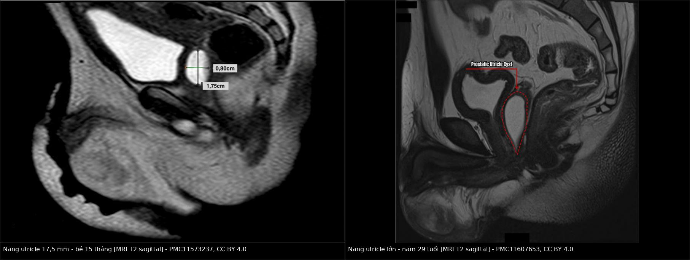
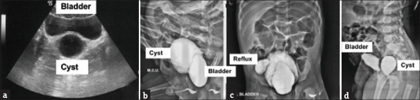
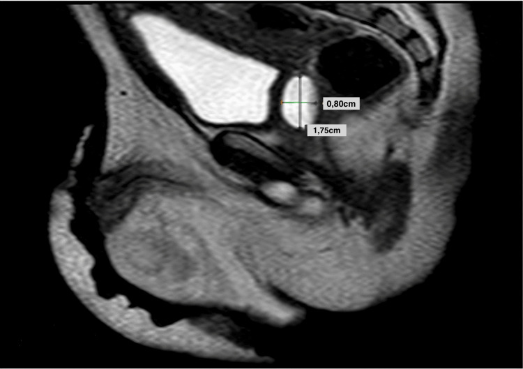
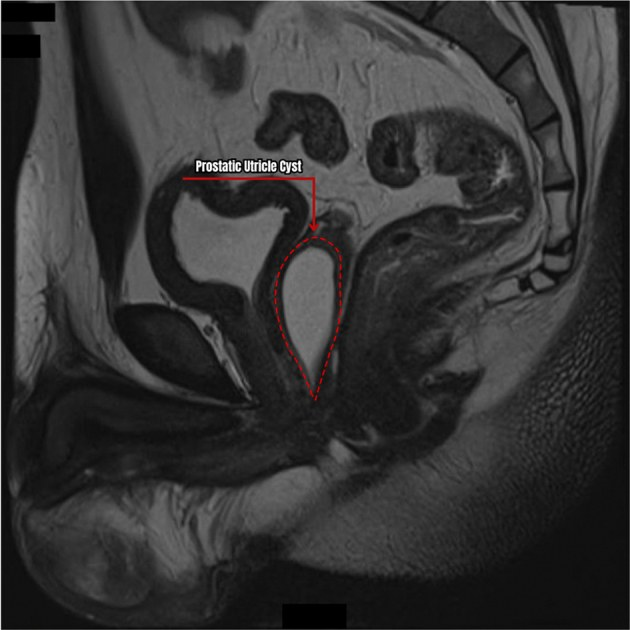
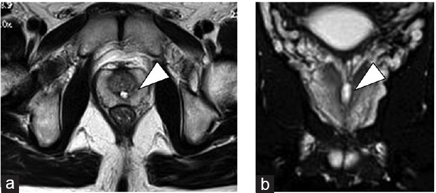

3078 — Nang ống utricle & nang ống Müllerian: ổ dịch ĐƯỜNG GIỮA sau bàng quang — khi nào theo dõi, khi nào mổ
Tags: pattern:nang-duong-giua pattern:o-dich-thuy-dich pattern:thanh-mong pattern:thong-nieu-dao pattern:di-tat-kem vung:tiet-nieu vung:tuyen-tien-liet vung:tieu-khung protocol:MRI-tieu-khung protocol:VCUG protocol:TRUS protocol:noi-soi-nieu-dao score:PUC-grade
Mức chắc chắn (certainty): tổng hợp y văn (literature synthesis) — ghép phân tích gộp 22 ca trẻ có cơ quan sinh dục ngoài bình thường (BMC Urol 2019, PMC6446365), nghiên cứu đoàn hệ nội soi ở trẻ hẹp niệu đạo thể gần (Front Pediatr 2025, PMC11897568), nghiên cứu MRI 4.990 nam trung–cao tuổi (The Prostate 2025, PMC12211538) và các ca có ảnh (Cureus 2024, PMC11573237; Int J Surg Case Rep 2024, PMC11607653; J Indian Assoc Pediatr Surg 2025, PMC12094596; Asian J Androl 2022, PMC9491043). Không có ca do nhóm tự chụp.
Câu hỏi thực hành: bé trai 15 tháng, viêm mào tinh–tinh hoàn tái diễn nhiều đợt dù đã dùng kháng sinh, bìu trái sưng đau; MCUG thấy cấu trúc nang sau bàng quang đổ đầy khi đi tiểu; MRI T2 dọc thấy nang đường giữa 17,5 × 8 mm ngay sau niệu đạo sau. Đây là nang bẩm sinh cần mổ hay biến thể bình thường của ống utricle? Bài chốt ba quyết định: (1) nang đường giữa ngay sau niệu đạo sau, thành mỏng, đổ đầy từ niệu đạo = nang ống utricle (prostatic utricle cyst) cho đến khi chứng minh ngược; (2) không phải nang nào cũng mổ — grade 0–I, không triệu chứng, < 20 mm thì theo dõi; (3) trước khi can thiệp phải kiểm tra THẬN cùng bên và cơ quan sinh dục ngoài — 32% có bất sản thận một bên, và thể gần/DSD là bối cảnh hay gặp. Nối 3055 – Áp-xe tuyến tiền liệt, 3077 – Áp-xe túi tinh.
1. Tổng quan bệnh học – cơ chế hình ảnh: vì sao ổ dịch nằm đúng đường giữa
- Giải phẫu – phôi thai: ống utricle (prostatic utricle, "utricle of the prostate") là túi cùng đường giữa dài ~6 mm nằm trong tuyến tiền liệt, đổ vào gò tinh (verumontanum) của niệu đạo sau, giữa hai lỗ ống phóng tinh (PMC11897568). Phần sọ phát sinh từ ống Müllerian, phần đuôi phối hợp ống Müllerian + ống Wolffian + xoang niệu dục (PMC6446365) — vì thế biểu mô lót có thể là trụ, chuyển tiếp, vuông hoặc vảy tùy đoạn.
- Sinh lý bệnh: bình thường ống Müllerian thoái triển dưới yếu tố ức chế Müllerian (MIF/AMH) của tinh hoàn thai. Thoái triển không hoàn toàn và/hoặc giảm kích thích androgen lên xoang niệu dục → ống utricle tồn dư và giãn thành nang (PMC6446365). Lỗ đổ hẹp + tuyến lót tiết nhầy → ứ dịch; vì thông với niệu đạo, nước tiểu trào vào khi đi tiểu → ứ nước tiểu thứ phát, nhiễm trùng, sỏi, viêm mào tinh tái diễn.
- TẠI SAO tín hiệu MRI như vậy:
- Dịch đơn thuần (nước tiểu/nhầy loãng): T1 thấp, T2 rất cao, không ngấm thuốc — giống mọi nang dịch.
- Nhầy đặc, protein cao hoặc xuất huyết cũ → T1 tăng dần; đây là lý do ổ "nang" có thể sáng trên T1 mà không phải mỡ (không mất tín hiệu khi fat-sat).
- Sỏi trong nang → trống tín hiệu mọi chuỗi xung, thấy rõ trên CT.
- Thành mỏng, đều, không ngấm thuốc khi không viêm; thành dày + ngấm thuốc viền + hạn chế khuếch tán khi bội nhiễm (khác biệt với áp-xe — bài 3055/3077).
- Ngưỡng định lượng phải thuộc:
| Biến số | Số liệu | Nguồn |
|---|---|---|
| Tần suất ống utricle | 1% nam giới khi mổ tử thi; 5% ở bệnh nhân niệu khoa; 2,54% (127/4.990) nam 40–90 tuổi trên MRI | PMC6446365; PMC12211538 |
| Ống utricle bình thường | dài ~6 mm | PMC11897568 |
| Trẻ hẹp niệu đạo thể gần | nang utricle 73,5% (25/34); trục dọc 10–35 mm (trung vị 15 mm) | PMC11897568 |
| Nguy cơ có triệu chứng | 12% (3/25) sau trung bình 30 tháng; nang ≥ 20 mm: 3/10 có triệu chứng vs 0/15 nang < 20 mm (p = 0,024) | PMC11897568 |
| "Nang lớn" theo định nghĩa giải phẫu | > 1 cm; triệu chứng thường khi ≥ 2,5 cm | PMC11607653 |
| 22 ca trẻ có sinh dục ngoài bình thường | tuổi trung bình 5,8 (2 tháng–18 tuổi); bất sản thận một bên 32% | PMC6446365 |
| Triệu chứng (22 ca) | NTH/tiết mủ niệu đạo/đái mủ 41%; LUTS kích thích 17%; LUTS tắc nghẽn 14%; bí tiểu 18%; viêm mào tinh 14% | PMC6446365 |
| Giá trị chẩn đoán từng phương thức | siêu âm đúng 68%; VCUG/RUG 59%; CT/MRI 50% | PMC6446365 |
| Kích thước ca điển hình | 17,5 × 8 mm (15 tháng); 8 × 3 cm (6 tháng); 1,6 × 1,5 × 4,4 cm (29 tuổi) | PMC11573237; PMC12094596; PMC11607653 |
- Nhãn "nang ống Müllerian" vs "nang ống utricle": nhiều tài liệu dùng lẫn. Khác biệt thực dụng: nang ống utricle thông với niệu đạo sau (thấy thuốc vào nang khi VCUG), hình ống/giọt, gặp ở trẻ và thường kèm hẹp niệu đạo, tinh hoàn ẩn, DSD; nang ống Müllerian điển hình không thông với niệu đạo, hình tròn, gặp ở nam 20–40 tuổi có sinh dục ngoài bình thường (PMC6446365). Sự khác biệt này quyết định việc có cần nội soi đóng/mở lỗ đổ hay chỉ theo dõi.
2. Mẫu hình + chẩn đoán phân biệt theo vị trí và tuổi (gamut)
- Theo vị trí — "ổ dịch ĐƯỜNG GIỮA sau bàng quang":
- Ngay sau niệu đạo sau, trong tuyến tiền liệt: nang ống utricle (thông niệu đạo) · nang ống Müllerian (không thông) · nang ống phóng tinh (ejaculatory duct cyst) · áp-xe tuyến tiền liệt · thoái hóa nang của ung thư tuyến tiền liệt.
- Lệch một bên, trên tuyến tiền liệt: nang túi tinh (seminal vesicle cyst) — đặc biệt hội chứng Zinner (kèm bất sản thận cùng bên) · nang niệu quản lạc chỗ.
- Trước bàng quang, đường giữa: nang niệu rốn (urachal cyst) — dính thành bụng trước, không liên quan niệu đạo.
- Thông với bàng quang: túi thừa bàng quang (bladder diverticulum) — cổ rộng ở thành bàng quang, không ở niệu đạo sau.
- Theo tuổi/bối cảnh:
- Trẻ có hẹp niệu đạo thể gần, tinh hoàn ẩn, DSD → nang ống utricle, thường grade II–III, dễ có triệu chứng.
- Nam 20–40 tuổi, sinh dục ngoài bình thường, nang tròn → nang ống Müllerian; có thể đến vì vô sinh do tắc ống phóng tinh (vô sinh do tắc chiếm 20–40% các ca vô tinh).
- Nam lớn tuổi, chụp MRI tuyến tiền liệt vì lý do khác → ống utricle nhỏ (trung bình 0,4 cm³) là biến thể tình cờ, không can thiệp.
- Ba câu hỏi chốt: (1) nang có đổ đầy từ niệu đạo sau không (VCUG/nội soi)? (2) thận cùng bên có tồn tại không? (3) có triệu chứng/≥ 20 mm/grade II–III không?
3. Bảng so sánh phân biệt (ma trận đối chiếu)
| Thực thể (entity) | Hình ảnh điển hình (US/VCUG/MRI) | Chốt vào (rule-in) | Chốt loại (rule-out) | Gợi ý xác nhận |
|---|---|---|---|---|
| Nang ống utricle | Nang đường giữa, hình ống/giọt, cổ hẹp về gò tinh, thành mỏng; T2 rất cao, T1 thấp (hoặc cao nếu nhầy/máu); đổ đầy khi đi tiểu | Thấy lỗ đổ ở gò tinh + nang đổ đầy từ niệu đạo sau | Không thấy thuốc vào nang + nang tròn trên tuyến → nghĩ nang Müllerian | VCUG/MCUG + nội soi niệu đạo; MRI dọc để đo trục dài |
| Nang ống Müllerian | Nang tròn, đường giữa, trong/trên tuyến tiền liệt, thành mỏng, không thông niệu đạo | Nang tròn + không đổ đầy từ niệu đạo + nam 20–40 tuổi, sinh dục ngoài bình thường | Có lỗ đổ ở gò tinh + hình ống → nang ống utricle | MRI T2 dọc; nội soi xác nhận không có lỗ đổ |
| Nang túi tinh / Zinner | Nang lệch một bên, trên–sau tuyến tiền liệt, T2 cao; thận cùng bên bất sản, niệu quản lạc chỗ | Nang một bên + bất sản thận cùng bên | Nang đúng đường giữa + hai thận đủ → loại | Siêu âm/CT hệ niệu + MRI tiểu khung |
| Áp-xe tuyến tiền liệt | Ổ dịch vỏ dày ngấm thuốc, cặn/khí, DWI cao–ADC thấp, đông đặc quanh | Sốt + CRP cao + vỏ dày ngấm thuốc | Thành mỏng, không ngấm, không sốt → nang | MRI có DWI; chọc hút nếu còn nghi |
| Túi thừa bàng quang | Túi thông với bàng quang, cổ ở thành bàng quang; thường thấy được trên cystography thì đổ đầy | Cổ túi ở thành bàng quang, trên não cổ bàng quang | Cổ nang ở niệu đạo sau/gò tinh → nang utricle | Cystography thì đổ đầy + MPR; nội soi bàng quang |
| Nang niệu rốn | Nang đường giữa phía TRƯỚC, dính rốn–đỉnh bàng quang, không liên quan tuyến tiền liệt | Vị trí trước bàng quang + dính thành bụng | Nằm sau bàng quang → loại | Siêu âm thành bụng + MRI |
| Ung thư tuyến tiền liệt thoái hóa nang | Nang không đồng nhất, có phần đặc ngấm thuốc, xâm lấn; PSA cao | Phần đặc ngấm thuốc + PSA cao + tuổi lớn | Nang thuần dịch, thành mỏng, PSA bình thường → loại | MRI đa tham số + PSA + sinh thiết |

*Trái — bé 15 tháng, viêm mào tinh tái diễn: nang 17,5 × 8 mm ngay sau niệu đạo sau (Cureus 2024, PMC11573237, CC BY 4.0). Phải — nam 29 tuổi, vô sinh nguyên phát: nang lớn 1,6 × 1,5 × 4,4 cm choán toàn bộ tuyến tiền liệt (Int J Surg Case Rep 2024, PMC11607653, CC BY 4.0). Cùng một bệnh, hai cực kích thước — quyết định theo triệu chứng + grade, không theo "thấy nang là mổ". Ảnh ghép letterbox, giữ nguyên nhãn của tác giả.*
J Indian Assoc Pediatr Surg 2025 (PMC12094596), CC BY-NC-SA 4.0: (a) siêu âm dọc — nang sau bàng quang; (b–d) MCUG — nang 8 × 3 cm đổ đầy từ niệu đạo sau, đồng thời niệu quản lạc chỗ đổ vào nang và thận phải không lên hình. Đây là lý do phải chụp hệ niệu trước khi mổ: bỏ sót niệu quản lạc chỗ = cắt vào đường niệu.4. Protocol chụp + phân độ và ngưỡng xử trí
- Bậc chẩn đoán hình ảnh:
- Siêu âm (bụng dưới qua ngả bụng, đáy chậu hoặc qua trực tràng): đầu tay — ổ dịch đường giữa sau bàng quang, thành mỏng; đúng chẩn đoán 68% trong loạt gộp. Hạn chế: khó thấy nang nhỏ (grade 0–I).
- MCUG/VCUG (hoặc RUG): chứng minh thông với niệu đạo sau — tiêu chuẩn phân biệt với nang Müllerian; đồng thời phát hiện niệu quản lạc chỗ, trào ngược, hẹp niệu đạo. Đúng 59%.
- MRI tiểu khung (T1, T2 dọc + ngang, DWI, sau gadolinium): bắt buộc khi cân nhắc mổ — xác định đỉnh nang so với cổ bàng quang (phân độ), quan hệ trực tràng – túi tinh – ống dẫn tinh, tìm phần đặc và sỏi. Đúng 50% khi dùng đơn thuần, nhưng là phương thức lập kế hoạch mổ tốt nhất.
- CT: ít lợi thế hơn MRI; hữu ích khi cần sỏi, biến chứng, hoặc chống chỉ định MRI.
- Nội soi niệu đạo: tiêu chuẩn vàng — thấy lỗ đổ ở gò tinh; đặt catheter vào nang để bơm thuốc hoặc dẫn đường cho mổ nội soi.
- Phân độ theo hình ảnh (grade 0–III, theo VCUG): grade 0 — khu trú ở gò tinh; grade I — dưới cổ bàng quang; grade II — vượt qua cổ bàng quang; grade III — lỗ đổ xa hơn cơ thắt ngoài, ở niệu đạo hành (PMC6446365; PMC11573237).
- Ngưỡng xử trí: grade 0–I không triệu chứng → theo dõi, không can thiệp; grade II–III, có triệu chứng (NTH tái diễn, viêm mào tinh, bí tiểu, đái rỉ sau tiểu, vô sinh do tắc) hoặc ≥ 20 mm → can thiệp (PMC11897568; PMC6446365).
- Lựa chọn can thiệp:
- Nội soi: mở rộng lỗ đổ/incision đạt đường kính ≥ 4–5 mm, hoặc đặt catheter dẫn lưu — ít xâm lấn nhưng tái phát cao hơn (PMC12094596; PMC6446365).
- Cắt nang nội soi ổ bụng/robot — ưu tiên khi nang lớn, grade II–III, tái phát sau nội soi; có thể dùng stent niệu quản trong nang làm "đèn dẫn đường" để tránh tổn thương ống dẫn tinh/niệu đạo (PMC11573237).
- Mổ mở (sau xương mu, qua bàng quang, sau trực tràng) — nay ít dùng.
- Trước mọi can thiệp: siêu âm/CT hệ niệu tìm bất sản thận, niệu quản lạc chỗ; khám và đánh giá DSD nếu cơ quan sinh dục ngoài không điển hình.
flowchart TD
A[Nam có ổ dịch đường giữa sau bàng quang] --> B[Siêu âm + MCUG/VCUG]
B --> C{Nang đổ đầy từ niệu đạo sau?}
C -->|Không| D[Nang Müllerian/túi tinh/niệu rốn: MRI xác định, theo dõi nếu không triệu chứng]
C -->|Có| E[Nang ống utricle: MRI dọc + kiểm tra thận cùng bên + sinh dục ngoài]
E --> F{Grade 0-I, không triệu chứng, dưới 20 mm?}
F -->|Có| G[Theo dõi lâm sàng + siêu âm định kỳ]
F -->|Không| H{Triệu chứng hoặc grade II-III hoặc ≥ 20 mm?}
H -->|Có| I[Nội soi mở lỗ đổ ≥ 4-5 mm hoặc cắt nang nội soi/robot]
I --> J[Theo dõi tái phát + chức năng tiểu + sinh sản]
5. Biến thể bình thường và cạm bẫy
- Bẫy 1 — "thấy nang là mổ": ống utricle nhỏ gặp ở 2,54% nam trung–cao tuổi chụp MRI vì lý do khác, thể tích trung bình 0,4 cm³, hầu như vô hại (PMC12211538). Không triệu chứng + grade 0–I + < 20 mm → theo dõi.
- Bẫy 2 — bỏ sót bất sản thận/niệu quản lạc chỗ: 32% ca nang utricle có bất sản thận một bên (PMC6446365); niệu quản lạc chỗ có thể đổ vào chính nang — siêu âm thận trước khi chọc/cắt.
- Bẫy 3 — bỏ sót DSD: nang utricle là một phần của hội chứng ống Müllerian tồn tại (PMDS) và các DSD 46,XY; ca 46,XX SRY-negative có nang utricle lớn đã được báo. Cơ quan sinh dục ngoài "bình thường" không loại trừ hoàn toàn.
- Bẫy 4 — nhầm nang với áp-xe: nang bội nhiễm có thành dày, ngấm thuốc, hạn chế khuếch tán; nhưng không có ngưỡng ADC riêng cho ống utricle — phải đọc cùng sốt/CRP và cấy. Điều trị áp-xe là dẫn lưu + kháng sinh, không phải cắt nang ngay.
- Bẫy 5 — T1 sáng bị đọc là mỡ: nhầy đặc/máu cũ làm T1 tăng; nếu không có fat-sat đối chiếu, dễ gọi sai là "nang mỡ" (teratoma). Thêm T1 fat-sat.
- Bẫy 6 — nang nhỏ trên siêu âm bị bỏ qua: nang grade 0–I không thấy rõ trên siêu âm và có thể không đổ đầy trên VCUG (đúng chỉ 59%) — nếu lâm sàng mạnh (viêm mào tinh tái diễn, đái rỉ sau tiểu), nội soi niệu đạo là bước quyết định.
- Bẫy 7 — tái phát sau nội soi: mở lỗ đổ quá nhỏ (< 4–5 mm) → hẹp lại, ứ dịch trở lại; cần đo đường kính lỗ sau mổ và theo dõi.
6. Tự lượng giá — Blind Quiz
Ca 1 — Bé trai 15 tháng, viêm mào tinh–tinh hoàn tái diễn, bìu trái sưng đau.

- Gợi ý lâm sàng: nhiều đợt viêm mào tinh dù kháng sinh, cấy nước tiểu Pseudomonas aeruginosa; sinh dục ngoài bình thường; MCUG thấy nang sau bàng quang đổ đầy khi đi tiểu.
- Câu hỏi: Nang nằm ở đâu so với bàng quang và niệu đạo? Vì sao viêm mào tinh lại tái diễn? Ba chẩn đoán phân biệt và bước xác nhận?
Bấm để hiện đáp án
- Dấu hiệu (findings): nang đường giữa, thành mỏng, kích thước 17,5 × 8 mm, nằm ngay sau niệu đạo sau/tuyến tiền liệt, đổ đầy từ niệu đạo khi đi tiểu.
- Chẩn đoán (diagnosis): nang ống utricle (prostatic utricle cyst) — nước tiểu ứ trong nang, vi khuẩn trào ngược theo ống phóng tinh gây viêm mào tinh tái diễn.
- Phân biệt: nang ống Müllerian (không thông niệu đạo, tròn), nang túi tinh/Zinner (lệch bên + bất sản thận cùng bên), túi thừa bàng quang (cổ ở thành bàng quang).
- Xác nhận: nội soi thấy lỗ đổ ở gò tinh; trước mổ kiểm tra thận cùng bên và sinh dục ngoài. Ca này được cắt nang nội soi ổ bụng với stent niệu quản làm dẫn đường.
- Nguồn ảnh: Cureus 2024 (PMC11573237), CC BY 4.0.
Ca 2 — Bé trai 6 tháng, bí tiểu và nhiễm trùng niệu tái diễn.
- Gợi ý lâm sàng: bí tiểu, nhiễm trùng niệu; siêu âm thấy nang sau bàng quang; xạ hình thận thấy thận phải không chức năng.
- Câu hỏi: (a)–(d) cho thấy gì? Vì sao phải chụp hệ niệu và làm xạ hình trước khi mổ?
Bấm để hiện đáp án
- Dấu hiệu (findings): siêu âm (a) nang sau bàng quang 8 × 3 cm, dịch có echo (nghi nhiễm); MCUG (b–d) nang đổ đầy từ niệu đạo sau, niệu quản lạc chỗ đổ vào nang, thận phải không lên hình.
- Chẩn đoán (diagnosis): nang ống utricle lớn + thận phải lạc chỗ/không chức năng + niệu quản lạc chỗ đổ vào nang.
- Vì sao: cắt nang mà không biết niệu quản lạc chỗ sẽ cắt vào đường niệu hoặc bỏ lại thận không chức năng gây nhiễm trùng; ca này mổ nội soi 3D cắt nang + xử lý thận/niệu quản lạc chỗ + cố định tinh hoàn.
- Nguồn ảnh: J Indian Assoc Pediatr Surg 2025 (PMC12094596), CC BY-NC-SA 4.0.
Ca 3 — Nam 29 tuổi, vô sinh nguyên phát và viêm mào tinh–tinh hoàn tái diễn.

- Gợi ý lâm sàng: vô tinh, nhiều đợt viêm mào tinh–tinh hoàn; MRI thấy cấu trúc nang đường giữa lớn.
- Câu hỏi: Vì sao nang gây vô sinh do tắc? Kích thước nào được coi là "lớn"? Hướng xử trí?
Bấm để hiện đáp án
- Dấu hiệu (findings): nang 1,6 × 1,5 × 4,4 cm, choán toàn bộ tuyến tiền liệt, không có ổ hạn chế khuếch tán (không phải áp-xe/u đặc).
- Chẩn đoán (diagnosis): nang ống utricle lớn gây tắc ống phóng tinh → vô tinh do tắc.
- Vì sao: nang chèn/tắc đường xuất tinh chung; "nang lớn" được định nghĩa > 1 cm, và ≥ 2,5 cm thường có triệu chứng.
- Xử trí: cắt nang bằng robot + micro-TESE lấy tinh trùng dự trữ nếu muốn sinh sản; ca này có thai thành công sau một chu kỳ IVF.
- Nguồn ảnh: Int J Surg Case Rep 2024 (PMC11607653), CC BY 4.0.
Ca 4 — Nam 38 tuổi, vô tinh, không sốt.

- Gợi ý lâm sàng: vô tinh, xuất tinh máu tái diễn; không đau, không sốt.
- Câu hỏi: Nang nhỏ như vậy có cần mổ không? Cần phân biệt với gì?
Bấm để hiện đáp án
- Dấu hiệu (findings): nang nhỏ đường giữa trong tuyến tiền liệt (đầu mũi tên), thành mỏng, không có phần đặc.
- Chẩn đoán (diagnosis): nang ống utricle nhỏ — có thể chỉ là biến thể, nhưng trong bối cảnh vô tinh phải đánh giá tắc ống phóng tinh và nhiễm trùng đường sinh dục.
- Phân biệt: nang Müllerian (tròn, không thông), nang túi tinh, áp-xe tuyến tiền liệt.
- Xử trí: điều trị nguyên nhân nhiễm trùng/tắc; không cắt nang chỉ vì kích thước nếu không có triệu chứng tắc.
- Nguồn ảnh: Asian J Androl 2022 (PMC9491043), CC BY-NC-SA 4.0.
Bài liên quan chéo
- 100 – Tổng quan hệ Bụng
- 3055 – Áp-xe tuyến tiền liệt
- 3077 – Áp-xe túi tinh
- 158 – Tuyến tiền liệt & PI-RADS
- 672 – Biến chứng muộn sau tái tạo bàng quang
- 3067 – Hẹp niệu quản do BK sau ghép thận
Ảnh
- 4 ảnh + 1 composite: CC BY 4.0 (Cureus 2024, PMC11573237; Int J Surg Case Rep 2024, PMC11607653) và CC BY-NC-SA 4.0 (J Indian Assoc Pediatr Surg 2025, PMC12094596; Asian J Androl 2022, PMC9491043) — nguyên bản, composite chỉ letterbox + dải attribution, không crop/kéo giãn; chi tiết trong
images/CREDITS.md.
Không dùng để chẩn đoán độc lập khi chưa có người hướng dẫn.